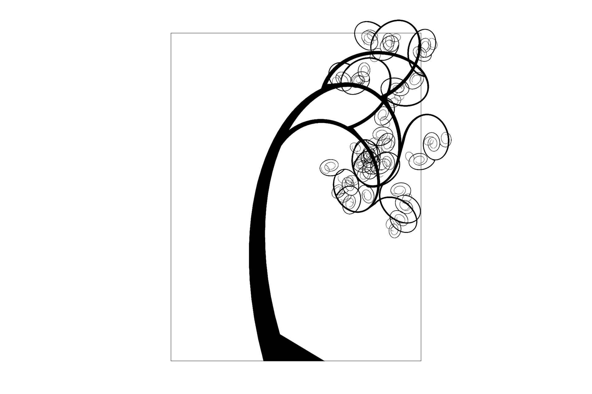

~~~~~~~~~~~~~~~~~~~~~~~~~~~~~~~Hugh Chen~~~~~~~~~~~~~
About Me (hide/show)
2nd year M.S. student studying Statistics at University of Washington. Graduated from University of California, Berkeley with High Distinction in General Scholarship (BA in Computer Science).
Currently doing research related to Computational Health/Biology as a part of Professor Su-In Lee's Lab. I'm interested in machine learning as well as probabilistic modelling for high-impact societal applications.
Hobbies: I used to breakdance and hope to get back into it. I like video games, reading, and love listening to music.
Contact: hugh.chen1(at)gmail.com
Projects - Research (hide/show)
~~~~~~~~~~~~~~~~~~~~~~~~~~~~~~~2017~~~~~~~~~~~~~~~~~~
Hugh Chen, Scott Lundberg, Su-In Lee. "Checkpoint Ensembles: Ensemble Methods from a Single Training Process". Submitted to AAAI. Paper.
~~~~~~~~~~~~~~~~~~~~~~~~~~~~~~~2016~~~~~~~~~~~~~~~~~~
Hugh Chen, Yusuf B. Erol, Eric Shen, Stuart Russell, "Probabilistic Model-Based Approach for Heart Beat Detection", Physiological Measurement, Vol. 37, No. 9, August 2016. Paper. Code.
Projects - Courses (hide/show)
~~~~~~~~~~~~~~~~~~~~~~~~~~~~~~~2017~~~~~~~~~~~~~~~~~~
Hugh Chen, "Implementation of Nonparametric Methods", May 2017. Tutorial that implements neural networks and KNN from scratch. Additionally implements gradient boosting trees using only sklearn's decision trees. Tutorial.
Hugh Chen, "Li and Stephens Model Paper Summary", May 2017. Explanation of the Li and Stephens model, which has applications in many parts of genetics (haplotype phasing, linkage disequilibrium, recombination rates, etc.). Explanation.
Hugh Chen, Tianqi Zhang, Yao Xiao, "Influential Factors for Gross Profit in Film", March 2017. Analyzes rotten tomato and imdb data. Exercise in web scraping, dealing with genre factors, censored data, and linear regression. Poster. Code.
~~~~~~~~~~~~~~~~~~~~~~~~~~~~~~~2016~~~~~~~~~~~~~~~~~~
Hugh Chen, Yiwen Song, "MAX-SAT Algorithms Survey", May 2016. Brief discussion of a few MAX-SAT algorithms. Overall, a fun exploration of approaches for an NP-Hard problem. Survey. Code.
Hugh Chen. "Recursive Trees", Spring 2016. Uses recursion, linear algebra, probability, and trigonometry just to draw trees. Tutorial. Code.

Stochastic tree.
Hugh Chen. "Computer Graphics Project", Spring 2016. Covers rasterization, texture mapping, geometry for meshes, shading, ray tracing, illumination, and cameras (ray tracing and autofocus). Writeup.
~~~~~~~~~~~~~~~~~~~~~~~~~~~~~~~2015 (and earlier)~~~~
Hugh Chen. "Graduation", May 2012. Short film I made in High School. Video.
Experience (hide/show)
Research Assistant. UW - Lee Lab (Dr. Su-In Lee). Fall 2016 - Ongoing.
Working on deep learning for health applications as well as a couple of genomics projects.
Research Assistant. UCB - RUGS (Dr. Stuart Russell). Spring 2015 - Spring 2016.
Worked on probabilistic modeling techniques (dynamic bayesian network) and state estimation (particle filter, Rao-Blackwellized particle filter) on health applications.
President, Vice President, Publicity Chair. UPE. Fall 2014 - Fall 2015.
UCB Computer Science Honors Society. Guided peers in organizing company info sessions, organizing tutoring/practice interviews, and setting up hackathons and a variety of other events.
Undergraduate Student Instructor. UCB - CS70. Spring 2015.
Taught two weekly one hour discussion sections, generated hw/exam problems, office hours for Berkeley's Discrete Math and Probability course.
Software Engineering Intern. Location Labs. Summer 2014.
Backend development (Restful Web API) for a mobile development company in the Bay area.
Volunteer Research Intern. UofA - AI Lab (Dr. Hsinchun Chen). Summer 2013.
Spidering/parsing international hacker forums.
Classes I've enjoyed (hide/show)
CS61AS - Structure and Interpretation of Computer Programs
CS70 - Discrete Mathematics and Probability Theory
CS174 - Combinatorics and Discrete Probability
CS162 - Operating Systems and Systems Programming
CS168 - Internet Architecture
CS184 - Computer Graphics and Imaging
CS189 - Introduction to Machine Learning
CS270 - Graduate Algorithms
Favorite artists (hide/show)